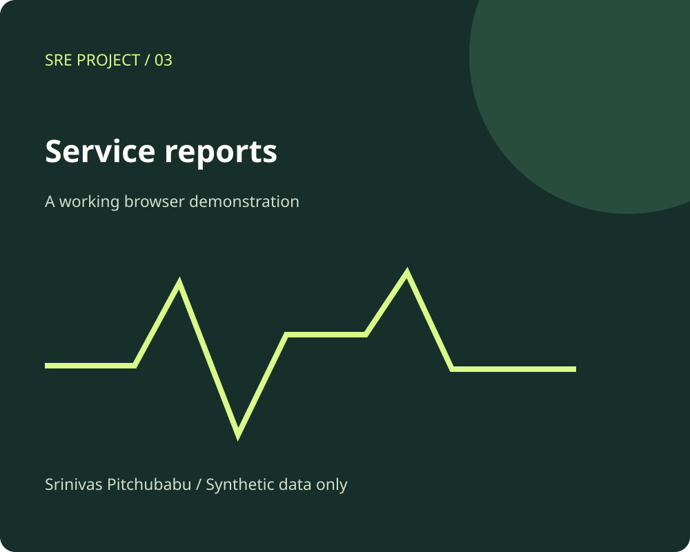

Service Performance Reporting / Public edition
Read the traffic. Find the friction.
Turn a fictional request dataset into a focused report of latency, errors, traffic, and endpoint behavior.
Telemetry analysisReportingLatency distributions

Explore the implementation
A small system you can inspect.
Selectable time windows
Nearest-rank P90 latency
Endpoint breakdown and CSV export
Try this.
Compare web and mobile requests over one hour and six hours. Identify the endpoint contributing the most server errors.
No OpenSearch or production logs are queried. Every value comes from generated records. Percentiles use the nearest-rank definition, and all records have an HTTP status.